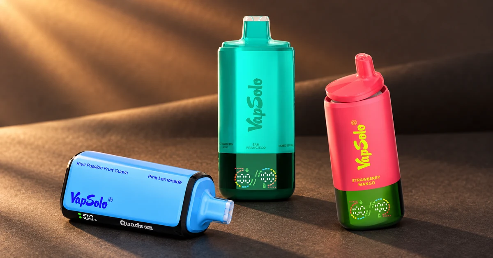

SIXER, Quads y Triple Pro: comparativa de sabores y caladas
Al comparar vapers con varios perfiles, el número de sabores puede ser un punto de partida más claro que la cifra más alta de caladas. Esta guía separa ambos datos para decidir con expectativas razonables.

Tres formatos, tres niveles de variedad
VapSolo SIXER 180K se presenta como formato de seis sabores. VapSolo Quads 80K se identifica con cuatro y VapSolo Triple Pro 60K con tres. El número expresa perfiles del formato, no confirma una combinación concreta: las variantes deben revisarse en la ficha actual.
| Modelo | Sabores indicados | Caladas anunciadas* | Pregunta útil |
|---|---|---|---|
| SIXER 180K | 6 | Hasta 180.000 | ¿Busco mayor variedad? |
| Quads 80K | 4 | Hasta 80.000 | ¿Cuatro perfiles cubren mi preferencia? |
| Triple Pro 60K | 3 | Hasta 60.000 | ¿Prefiero una selección acotada? |
Las caladas no resuelven la elección por sí solas
Las cifras de la tabla son referencias declaradas por el fabricante. No indican un plazo fijo ni permiten saber cuántas sesiones tendrá cada persona. Decide primero cuántos sabores quieres alternar y usa las caladas para comparar la categoría general.
Checklist antes de abrir la ficha externa
- Elige el nivel de variedad que tiene sentido para ti.
- Revisa las características publicadas del modelo exacto.
- Confirma la variante y las condiciones actuales en la tienda.
Conclusión
SIXER, Quads y Triple Pro proponen seis, cuatro y tres sabores respectivamente. Si buscas dos perfiles, continúa con la comparativa de Twins y Twins Pro .